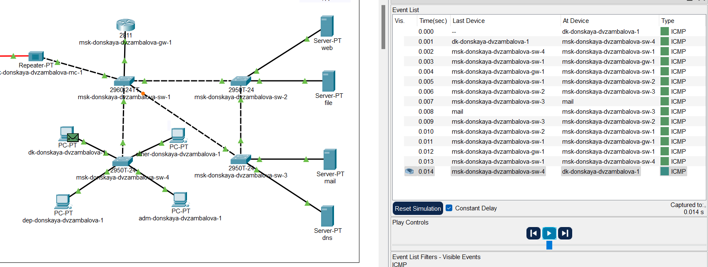
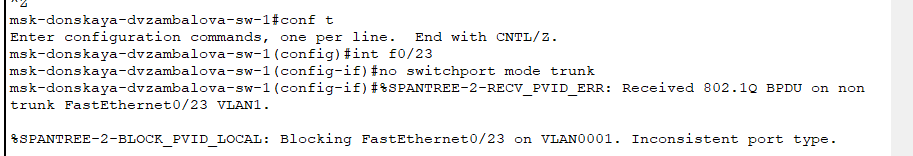

Изучить возможности протокола STP и его модификаций по обеспечению
отказоустойчивости сети, агрегированию интерфейсов и перераспределению
нагрузки между ними.
Задание
Сформировать резервное соединение между коммутаторами
msk-donskayasw-1 и msk-donskaya-sw-3.
Настроить балансировку нагрузки между резервными
соединениями.
Настроить режим Portfast на тех интерфейсах коммутаторов, к
которым подключены серверы.
Изучить отказоустойчивость резервного соединения.
Сформировать и настроить агрегированное соединение интерфейсов
Fa0/20 – Fa0/23 между коммутаторами msk-donskaya-sw-1 и
msk-donskaya-sw-4.
При выполнении работы необходимо учитывать соглашение об
именовании.
Выполнение лабораторной
работы
Логическая схема локальной сети с
резервным соединением
Выполнение лабораторной
работы
Настройка trunk-порта на интерфейсе
Gig0/2 коммутатора msk-donskaya-sw-3
Выполнение лабораторной
работы
Пингование сервера mail и
web
Выполнение лабораторной
работы
Режим симуляции движения пакетов
ICMP
Выполнение лабораторной
работы

Режим симуляции движения пакетов
ICMP
Выполнение лабораторной
работы
Просмотр состояния протокола STP для vlan
3
Выполнение лабораторной
работы
Настройка коммутатора msk-donskaya-sw-1
корневым
Выполнение лабораторной
работы
Режим симуляции движения пакетов ICMP к
серверу web
Выполнение лабораторной
работы
Режим симуляции движения пакетов ICMP к
серверу mail
Выполнение лабораторной
работы
Настройка режима Portfast
Выполнение лабораторной
работы
Пингование
mail.donskaya.rudn.ru
Выполнение лабораторной
работы
Разрыв соединения
Выполнение лабораторной
работы
Время восстановления
соединения
Выполнение лабораторной
работы
Режим работы по протоколу Rapid
PVST+
Выполнение лабораторной
работы
Пингование mail.donskaya.rudn.ru. Разрыв
соединения. Время восстановления соединения
Выполнение лабораторной
работы
Логическая схема локальной сети с
агрегированным соединением
Выполнение лабораторной
работы

Настройка агрегирования каналов на
msk-donskaya-dvzambalova-sw-1
Выполнение лабораторной
работы
Настройка агрегирования каналов на
msk-donskaya-dvzambalova-sw-1
Выводы
В результате выполнения лабораторной работы я изучила возможности
протокола STP и его модификаций по обеспечению отказоустойчивости сети,
агрегированию интерфейсов и перераспределению нагрузки между ними.